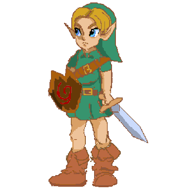

Link
Link é um personagem fictício e o principal protagonista da série de jogos eletrônicos The Legend of Zelda da Nintendo. O personagem aparece em várias encarnações ao longo dos jogos e também em diversas mídias envolvendo a Nintendo, incluindo merchandising em quadrinhos e séries animadas.
